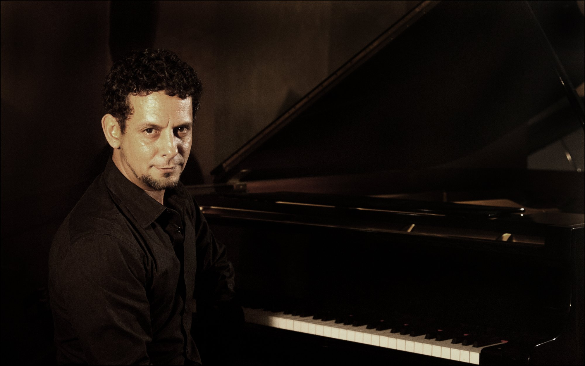

Ernesto Cisneros Cino is a Cuban composer, pianist, guitarist, writer, and digital artist, born in Havana and currently based in Miami. He began classical piano studies at the age of six, but by eleven he had already exhausted his relationship with the instrument and shifted his focus to the guitar. As a teenager he joined several youth bands, exploring popular music while continuing to study independently.
In school he gravitated strongly toward the sciences (mathematics, physics, biology, and chemistry), an early curiosity that would later shape his interest in technology, networks, and complex systems. In 1987 he joined Paisaje con Río, a Havana pop-rock band known for its socially charged lyrics. Over the following years he collaborated with a range of Cuban artists, working across popular music, electroacoustics, and studio production.
In the 1990s he studied Primary Education at the Enrique José Varona Higher Pedagogical Institute in Havana. In 1999 he left Cuba for the first time to live in Mexico, spending a year immersed in art and pedagogy. After returning to Havana in 2000, he began working in film alongside established composers, and his music soon appeared in television series, soap operas, documentaries, and cultural programs. A significant portion of his catalogue has been written for cinema and television, while he has maintained a steady career in composition, music production, and live performance since the early 2000s.
From 2020 onward, Ernesto became actively involved in the emerging NFT and Web3 communities, convinced that blockchain offered a fertile space for art in dialogue with technology. In 2024 he moved to Miami with his family, where he continues an intense creative rhythm in music, video, literature, and digital art, often integrating the latest technological tools and conceptual frameworks into his process.
Today his work lives at the intersection of sound, art, memory, and systems thinking; a multidisciplinary field where music, digital creation, narrative and complex ideas converge.
WikipediaCollaborations
A selection from the artists and institutions he has worked with
Everything is connected. Music, books, people, ideas, places. Below lies a map of those connections: a living constellation that grew across thirty years.
explore the connections